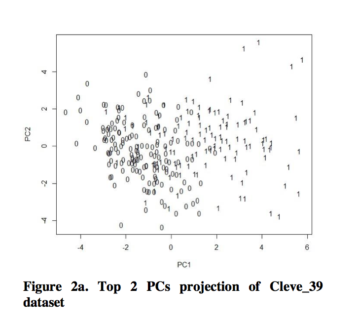
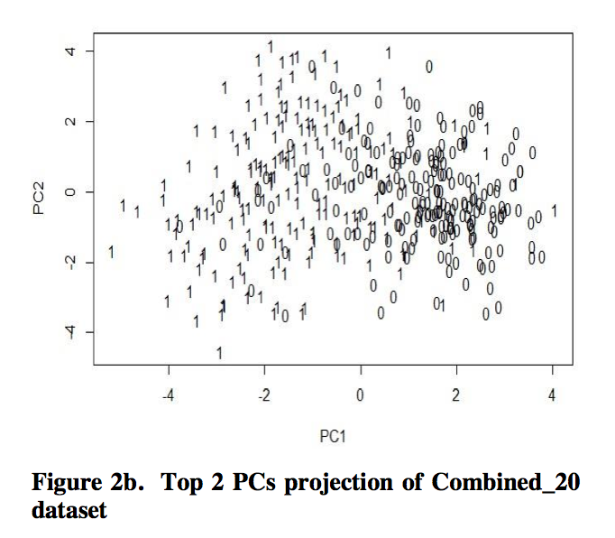
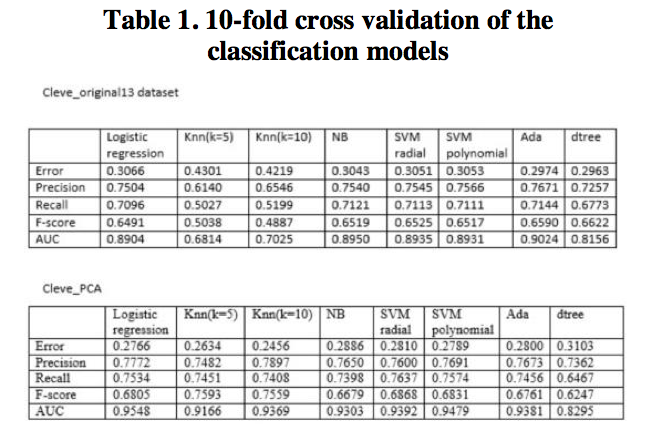
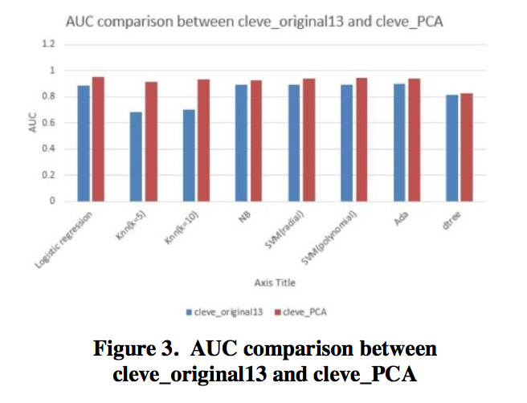
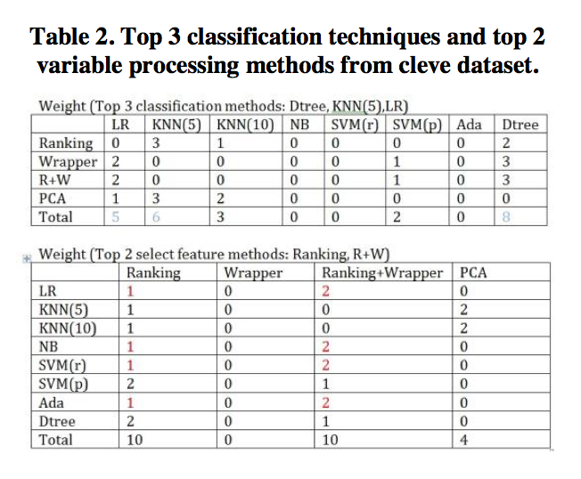
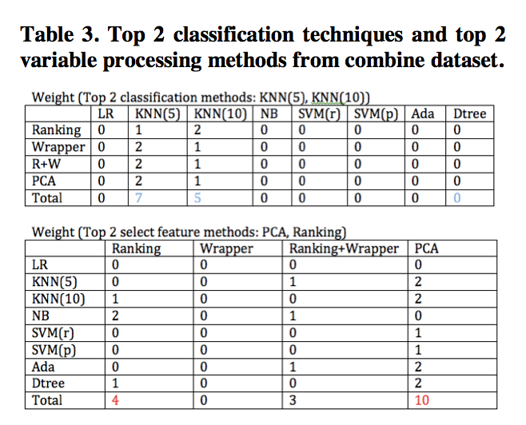
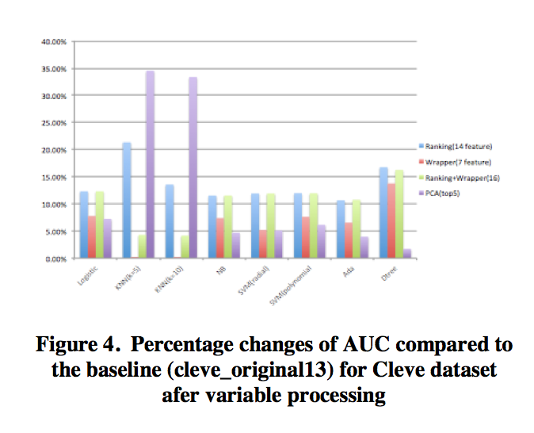
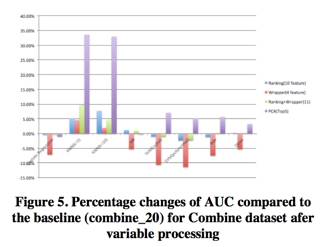

Variable processing improves classification performance on heart disease datasets(Data Analysis)
Making best use of clinical datasets has been the focus of machine learning in many clinic related research due to the limited clinical samples, and there are extensive research have been carried out in diseases classification and prediction using prior clinic data. In our paper, we specifically addressed how to best select the features of three different datasets (heart diseases data) which have 75 attributes but have different level of missing data for certain variables. Also, we want to balance between the dimension reduction and model performance. We used our best-selected variables to compare the efficiency of different classification techniques. After applying variable processing method, generally, the performance of classification techniques has been improved and some key features which were ignored by previous research, are identified to play a key role in improving classification model performance.
PCA dimension reduction
PCA is applied on both two datasets (cleve_39) and combine_20 after preprocessing. For visualization, we project both datasets on top 2 PCs (See Figure 2a and Figure 2b). We can see that the diseased and non- diseased people are well separated in Cleve_39 but not well separated for combine_20.


Feature selection techniques
a. Ranking. (cleve_r14: top14 features out of 39 features have been selected from cleve_39; combine_r10: top10 features out of 20 features have been selected from combine_20)
b. Wrapper. (cleve_w7: 7 features have been selected by wrapper from cleve_39; combine_w4: 4 features have been selected from combine_20)
c. Ranking+Wrapper. (cleve_rw16: top14 features from ranking and 2 features selected from wrapper but not in top14 ranking features have been added; combine_rw11: top10 features from ranking and 1 feature selected from wrapper but not in top10 ranking features have been added)
Classification techniques
Logistic regression (LR), k-nearest neighbors (KNN, k=5, k=10),naïve Bayesian (NB), support vector machine(SVM, kernel=radial, kernel= polynomial), Adaboost, Decision tree(Dtreen, pruned) have been applied in all the datasets after variable processing.
Cross validation and increased AUC percentage
10-fold cross validation has been used to assess the performance of the classification model, and we can get the statistics shown in Table 1, we can see after PCA projection. The performance of all the classification techniques has been improved compared to cleve_original13(shown in fig3).
Then, we assess the model performance by only focusing on the increased percentage of AUC of ROC for each model, compared to the baseline. The baseline for all cleve-derived dataset is cleve_original13. And the baseline for all combine- derived dataset is combine_20.
Weight assignment for classification techniques and variable processing methods
Based on the increased percentage of AUC, for same variable processing methods, we give integer weight from 3 to 1 to the top3 classification techniques and then sum them up for all 4 variable processing methods. The bigger the weight, the better the technique it is. On the other hand, for the same classification techniques, we give integer weight from 2 to 1 to the top2 variable processing methods, then sum them up for all different classification techniques, we can get the best classification technique which has the highest improved performance after those 4 variable processing method have been applied. (See Table 2 and Table 3)
 RESULTS
Cleve-derived datasets
From Figure 4, we can see that the performance of all the classification techniques has been improved for all those 4 variable processing methods. For some techniques, like knn (k=5,k=10), the increased percentage of AUC compared to the base line has already reached more than 30% after applying the top5 modes PCA projection of the dataset.(AUC improved from 0.6814,0.7025 to 0.9166,0.9368, see in table1). And from top panel of Table 2, we can see that Decision tree, k nearest neighbors (k=5) and logistic regression are the top 3 classification techniques which have highest improved performance after applying 4 variable processing methods. From the bottom part of Table 2, in terms of weight, ranking and ranking+wrapper are two best variable processing methods. Specifically, when looking at logistic regression, naïve Bayesian, support vector machine (kernel=radial), AdaBoost, ranking+wrapper always perform better than Ranking alone.
Combine-derived dataset
However, from Figure 5, we can see that the performance of classification techniques are not all improved and the performance of some classification techniques have even decreased after variable processing. But PCA still improves the performance of knn (k=3,k=5) dramatically as well.
From Table 3, we can see that knn is the only classification technique, which has improved performance for all variable-processing methods. And PCA is the best variable processing method in this dataset.